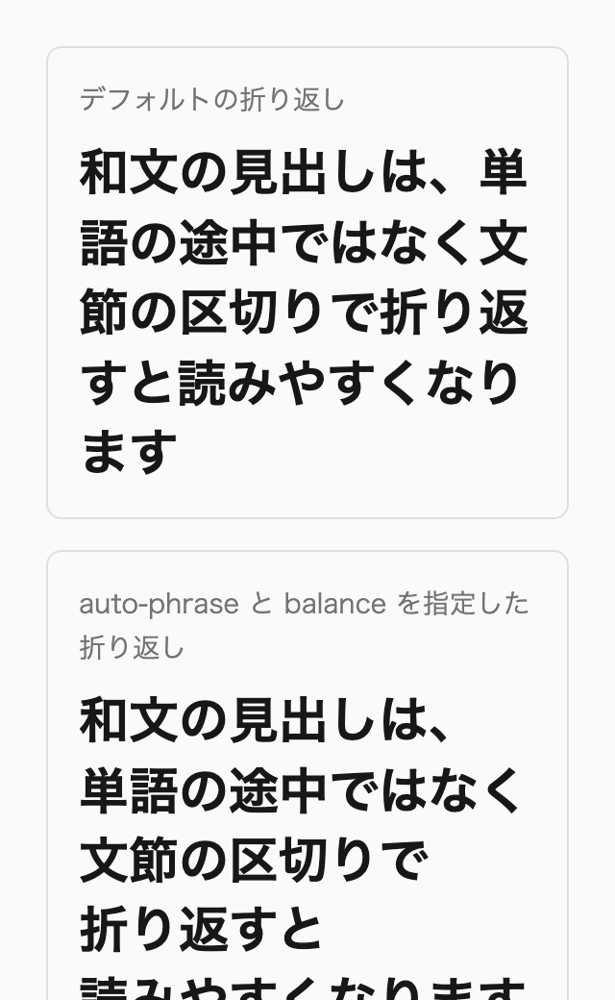
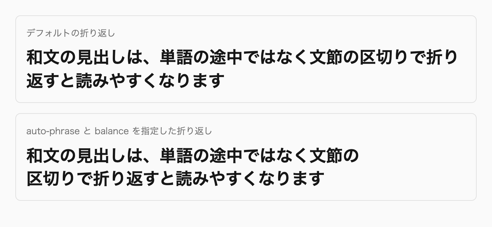
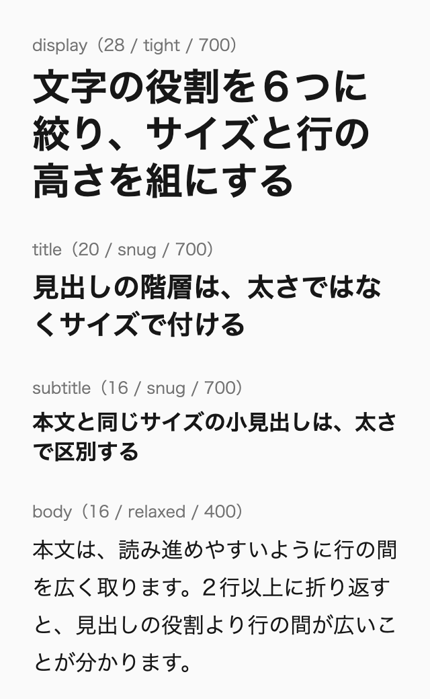
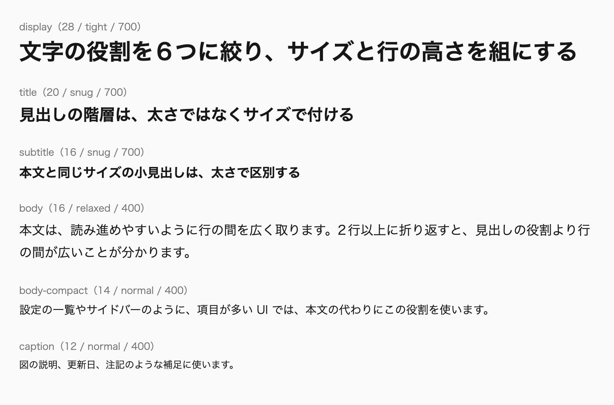

文字の組版は、ブラウザとユーザーの設定に任せる範囲を広く取り、見出しのように目立つ場所だけを整えます。フォントは総称ファミリーの sans-serif に任せ、本文は文字を詰めないベタ組みにし、本文の行の高さは1.5以上を保ち、見出しは用途に応じて詰めます。
ブラウザのデフォルトスタイルや、海外で作られたリセットCSSの多くは、欧文の組版を前提にしています。日本語のサイトでは、和文と英数字の間のアキ、約物の詰め、厳格な禁則といった和文向けの指定を、自分で足す必要があります。反対に、欧文の感覚で文字を詰めたり行の高さを削ったりすると、和文は読みにくくなります。
私自身、2020年の記事では、OSごとのフォントを長く並べ、本文全体に palt で文字を詰める書き方を勧めていました。その後、WindowsにNoto Sans JPが標準で入り、CSSにも text-autospace や text-box-trim のような組版のためのプロパティが増えました。いまは、CSSで細かく作り込むよりも、ブラウザの機能に任せて読みやすさを保つほうが、保守しやすく壊れにくいと考えています。
本書のサイトも、この章の考え方で作っています。原稿には和文と英数字の間に空白を入れず、フォントは sans-serif だけを指定し、見出しだけを palt で詰めて、対応するブラウザでは文節で折り返しています。
この章を読むと、フォント、字詰め、行の高さのうち、ブラウザとユーザーの設定に任せる範囲と、見出しのように自分で整える範囲を切り分けられるようになります。和文と英数字の間のアキや約物の詰め、禁則を、どのプロパティで、本文と見出しのどちらに適用するかも決められます。見出しの改行についても、手動で改行を入れるか、文節での折り返しや流体的な文字サイズに任せるかを判断できます。
この章は次の5つの節で構成しています。
@font-face、Webフォントの読み込み方、和文で斜体を使わない理由、太さを2段階にする理由、値が変わる数字の幅text-autospace、text-spacing-trim、line-break の値の選び方と、本文のベタ組みと見出しの詰めline-height: 1 を使わない理由と、ハーフレディングを取り除く方法単位のない line-height と clamp() の組み立て方は第6章「値と単位（巻1）」で、kiso.cssが入れている和文向けの初期値は第8章「リセットとベーススタイル（巻2）」で扱います※1。行の高さや文字の太さのトークンは第10章「コンポーネントとカスタムプロパティ（巻2）」で、文字を含む要素のアニメーションは第18章「モーション」で扱います。この章のコード例では、説明に関係しない @layer の記述を省略しています。デモのCSSには省略せずに書いています。
初めて読むときは、「14-3 行の高さとハーフレディング」「14-4 文字サイズと改行」「14-5 文字の役割と色」を読みます。14-1のフォントの指定と14-2の和文組版は、案件の最初にフォントと組版を決めるときに読んでください。
次のルールを先に押さえ、ほかのルールは、該当する場面で付録A「ルール一覧（巻3）」から引けば足ります。
base-line-height-min：ベースの line-height は1.5以上にして、各要素に継承させます。no-line-height-one：line-height: 1 を指定しません。lang-for-typesetting：html 要素とほかの言語で書いた部分に lang 属性を付け、言語ごとの組版を :lang() で切り替えます。overflow-wrap-over-word-break：word-break は初期値のままにし、長い単語やURLのはみ出しは overflow-wrap: anywhere で防ぎます。文字の組み方が決まったら、次はその文字と背景に付ける色を決めます。色は、コントラストによって文字の読みやすさを左右するうえに、ダークモードや強制カラーモードのように、ブラウザやユーザーの設定で置き換わる場面があります※2。
和文のフォントは、デザインで特に指定されていなければ、総称ファミリーの sans-serif だけを指定します。いまの主要なOSには読みやすい和文のゴシック体が入っていて、ユーザーが自分で選んだフォントも尊重できるからです。日本語のサイトでは、system-ui は使いません。
デザインでNoto Sans JPが指定され、どの環境でも表示する必要があるときは、端末に入っているフォントを優先する @font-face を用意します。
以前は、和文のフォントを指定するときに、OSごとのフォントの名前を長く並べるのが一般的でした。私も2020年の記事では、次のようなフォントスタックを勧め、総称ファミリーだけの指定は勧めていませんでした。
/* 🙅♂ Not Recommended */
@layer base {
:root {
font-family: "Helvetica Neue", "Segoe UI", "Hiragino Kaku Gothic ProN", "Hiragino Sans", Meiryo, sans-serif;
}
}当時のWindowsには、ヒラギノ角ゴシックのような和文フォントが入っていませんでした。游ゴシックは入っていたものの、Windowsでは文字がかすれて見えやすく、メイリオを指定するのが最も安定していました。総称ファミリーだけに任せると、ブラウザの仕様変更や不具合で、意図しない書体が選ばれることもありました。
こうした事情は、この数年で変わりました。2025年のアップデートで、Windows 11と10にNoto Sans JPが標準で入りました。Androidでは、メーカーが削除していなければNoto Sans CJK JPが、MacとiOSではヒラギノ角ゴシックが使われます。どのOSでも、sans-serif を指定するだけで読みやすい和文フォントが表示されます。
長いフォントスタックには、別の問題もあります。並べたフォントは、ユーザーがブラウザに設定したフォントより優先されます。ディスレクシアのある人は、UDデジタル教科書体のような読みやすいフォントを設定していることがあり、フォントの名前を並べるとその設定を上書きしてしまいます。
デザインで特に指定がなければ、font-family には sans-serif だけを指定します。本書が推奨するリセットCSSのkiso.cssも、:root に sans-serif を指定しています。Safariは font-family の指定がないと明朝体で表示するので、何も指定しないわけにはいきません。
@layer base {
:root {
font-family: sans-serif;
}
}OSのアップデートで表示されるフォントが変わる可能性はあります。それでも、ユーザーが設定したフォントを尊重できることを重く見て、sans-serif だけの指定を勧めます。本書のサイトも、フォントは sans-serif だけで指定しています。
欧文にブランドのフォントを使う場合も、考え方は同じです。欧文のフォントを先頭に置き、最後に sans-serif を書けば、欧文のフォントに含まれない和文は総称ファミリーで表示されます。フォントスタックは、トークンにしておきます。
:root {
--font-family--inter: "Inter", sans-serif;
}
@layer base {
:root {
font-family: var(--font-family--inter);
}
}総称ファミリーには、OSの画面の表示に使われるフォントを表す system-ui もあります。英語のサイトではよく使われますが、日本語のサイトでは避けます。Windowsでは、Noto Sans JPではなく、游ゴシックの画面表示用の書体が使われるからです。
/* 🙅♂ Not Recommended */
@layer base {
:root {
font-family: system-ui, sans-serif;
}
}注意したいのは、自分で書いていなくても system-ui が入り込むことです。海外製のUIフレームワークやリセットCSSには、system-ui を指定しているものがあります。特にTailwind CSSでは、フォントを設定しないままにすると、system-ui を含むフォントスタックが使われます。導入するときに、フォントの指定を確かめてください。
AIにCSSを書かせたときも、OSごとのフォントを並べたスタックや、system-ui から始まるスタックがよく出てきます。日本語のサイトなら、sans-serif だけに書き換えます。
デザインでNoto Sans JPが使われている場合は、まず端末のフォントで表示してよいかをデザイナーに確かめます。OSによって書体が変わってもよいなら、sans-serif だけで足ります。どの環境でもNoto Sans JPで表示する必要があるときだけ、Webフォントを読み込みます。
このとき、Google FontsのNoto Sans JPをそのまま指定すると、フォントが入っているWindowsとAndroidでも、同じフォントをダウンロードします。和文のWebフォントは容量が大きいので、無駄な通信になります。そこで、端末に入っているフォントだけを参照する @font-face を定義し、フォントスタックの先頭に置きます。
@font-face {
font-family: "Local Noto Sans JP";
src:
local("Noto Sans JP"),
local("Noto Sans CJK JP Regular");
}
@layer base {
:root {
font-family: "Local Noto Sans JP", "Noto Sans JP", sans-serif;
}
}local() は、端末にインストールされているフォントを参照する関数です。1つ目の名前はWindowsの、2つ目はAndroidのNoto Sans JPに当たります。"Local Noto Sans JP" という別名のファミリーは、フォントが見つかった環境では端末のフォントを使い、見つからない環境では無視されます。MacとiOSにはNoto Sans JPが入っていないので、次に並べた "Noto Sans JP"、つまりGoogle FontsのWebフォントが使われます。
ただし、Androidではメーカーによってフォントが入っていないことがあり、その場合はWebフォントが使われます。また、Android側の名前は標準の太さのフォントを指しているので、太字がどう表示されるかは実機で確かめてください。
明朝体を使う場合は、さらに注意が必要です。Androidでは、メーカーによって明朝体そのものが削除されていることがあります。Noto Serif JPはWindows 11には入っていますが、10には入っていません。明朝体をデザインどおりに表示するなら、Noto Serif JPなどのWebフォントを使い、同じように @font-face で端末のフォントを優先させます。
ここから先は、Webフォントを採用する場合の実装と表示の補正です。端末のフォントと sans-serif で足りるなら、読み飛ばして「和文の斜体」へ進めます。Webフォントの配信、プリロード、代わりのフォントの寸法補正、font-size-adjust の順に説明します。
Webフォントを自分のサーバーから配信するときは、@font-face にいくつかの記述子を加えます。私が使っているテンプレートでは、形式をWOFF2だけにし、unicode-range で文字の範囲ごとにファイルを分け、font-display で読み込み中の表示を決めています。@font-face は、ベーススタイルと同じ base レイヤーに置きます※1。
@font-face {
font-family: Inter;
src: url("/fonts/inter-latin.woff2") format("woff2");
unicode-range: U+0000-00FF, U+2000-206F;
font-weight: 100 900;
font-display: swap;
}WOFF2は圧縮率が高く、本書の対象のブラウザはすべて対応しているので、ほかの形式を並べる必要はありません。unicode-range を書くと、ブラウザは、ページで使われている文字を含むファイルだけをダウンロードします。font-weight: 100 900 は、1つのファイルで太さを変えられるバリアブルフォントであることを表します。
font-display は、フォントを読み込んでいる間の表示を決める記述子です。本文のフォントには swap を指定し、代わりのフォントですぐに文字を表示して、読み込みが終わったら切り替えます。装飾のためのフォントは optional にします。optional では、キャッシュにあるときのようにすぐ使える場合だけフォントを使います。表示の途中でフォントが切り替わらないので、レイアウトもずれません。
いちばん重要なフォントのファイルは、HTMLの <link rel="preload"> で先に読み込ませます。テンプレートでは、本文で使う欧文のファイルだけを、crossorigin 属性を付けてプリロードしています。すべてのファイルをプリロードすると、ほかの重要なリソースの読み込みを遅らせてしまうからです。
<link rel="preload" href="/fonts/inter-latin.woff2" as="font" type="font/woff2" crossorigin />Google Fontsを使う場合は、2つのサーバーへの preconnect で接続を先に済ませ、スタイルシートは rel="preload" で読み込みます。rel="stylesheet" のままではレンダリングをブロックしますが、preload で取得したスタイルシートは描画を止めません。読み込みが終わった時点で onload が rel を stylesheet に書き換え、スタイルが適用されます。JavaScriptが無効な環境のために、<noscript> で通常のスタイルシートも用意します。
URLに display=swap を指定しておくと、Webフォントの読み込み中は代わりのフォントで文字が表示されます。
<link rel="preconnect" href="https://fonts.googleapis.com" />
<link rel="preconnect" href="https://fonts.gstatic.com" crossorigin />
<link rel="preload" as="style" fetchpriority="high" href="https://fonts.googleapis.com/css2?family=Inter:wght@100..900&display=swap" onload="this.onload=null;this.rel='stylesheet'" />
<noscript>
<link rel="stylesheet" href="https://fonts.googleapis.com/css2?family=Inter:wght@100..900&display=swap" />
</noscript>この読み込み方は、インラインのイベントハンドラー（onload 属性）を実行できることが条件です。CSPの script-src-attr 'none' などで許可しないサイトでは、スタイルシートを取得できても onload が動かず、rel が preload のままで適用されません。<noscript> はJavaScriptが有効な環境では使われないので、救済になりません。許可しないサイトでは、通常の <link rel="stylesheet"> を使うか、CSPで許可したスクリプトから load イベントを登録して rel を書き換えます。通常の stylesheet はレンダリングをブロックしますが、preconnect と display=swap は同じように使えるので、遅れは小さくできます。
font-display: swap では、代わりのフォントで先に文字を表示し、読み込みが終わるとWebフォントに切り替えます。2つのフォントの字幅や行の高さが違うと、切り替わった瞬間に行の折り返しが変わり、下にある要素が動きます。これは、Core Web VitalsのCLS（レイアウトのずれ）の原因になります。
このずれは、代わりのフォントの寸法を補正して小さくできます。端末のフォントを local() で参照する @font-face を別に作り、寸法をWebフォントに合わせます。字幅は size-adjust で、行の高さに関わる寸法は ascent-override、descent-override、line-gap-override で補正します。補正したファミリーは、フォントスタックでWebフォントの直後に置きます。
@font-face {
font-family: "Inter Fallback";
src: local("Arial");
size-adjust: 107%;
ascent-override: 90%;
descent-override: 22%;
line-gap-override: 0%;
}
:root {
--font-family--inter: "Inter", "Inter Fallback", sans-serif;
}数値は説明のための例です。値は、2つのフォントのファイルに入っている寸法（平均の字幅、アセント、ディセントなど）から計算します。手で見当を付けずに、Capsizeやfontaineのようなツールで計算します。Next.jsのように、フレームワークがこの @font-face を自動で作る場合もあります。
代わりのフォントはOSによって違うので、1組の値ですべての環境のずれがなくなるわけではありません。上の例はArialを基準にしているので、Arialのない環境では補正が適用されません。また、size-adjust はすべての主要なブラウザで使えますが、ascent-override などの3つの記述子は、2026年9月の時点でSafariが対応していません。対応していない環境では補正の一部が適用されないだけで、表示が壊れることはありません。
Baseline一部のブラウザのみ
ascent-override、descent-override、line-gap-override
web-features 3.40.0 のデータ（2026年9月確認）
この補正が役に立つのは、欧文のWebフォントを本文に使う場合です。和文を総称ファミリーの sans-serif に任せるなら、Webフォントへの切り替えそのものが起きません。
font-size-adjust は、1つの要素の中で書体が混ざるときに、選んだ寸法がそろうように各フォントの大きさを補正するプロパティです。フォントは、同じ font-size でも字面の大きさが違います。欧文の小文字の高さ（x-height）が低いフォントは、ほかのフォントの隣に並ぶと小さく見えます。font-size-adjust を指定すると、ブラウザはフォントごとに寸法を測り、指定した比になるように文字を拡大・縮小します。
値は、そろえる寸法と比を ex-height 0.5 のように書きます。比を from-font にすると、その要素のフォントスタックで最初に使えるフォントから比を求めます。求めた比は数値として子孫に継承されるので、子孫で書体が切り替わっても、親のフォントと同じ字面の大きさにそろいます。そのため、from-font は親の要素で一度だけ指定します。すべての要素に指定すると、要素ごとに自分のフォントから比を求め直すので、何もそろいません。
@layer base {
:root {
&:lang(en) {
font-size-adjust: from-font;
}
}
}前の見出しの size-adjust とは、補正する対象と寸法が違います。size-adjust は @font-face の記述子で、特定の代わりのフォントだけを、字幅や行の高さに関わる寸法までWebフォントに合わせます。font-size-adjust は要素に指定するプロパティで、使われるすべてのフォントを1つの寸法でそろえます。Webフォントの読み込みの前後で行の折り返しが変わるのを防ぐなら、size-adjust を使います。font-size-adjust は、等幅のコードや代わりのフォントのように、同じ行に書体が混ざるときの字面をそろえるためのものです。
そろえる寸法は、混ざる文字に合わせて選びます。小文字の多い欧文の本文は、寸法を省略したときに使われる ex-height（小文字の高さ）でそろえます。大文字や数字が中心のラベルには cap-height（大文字の高さ）を、数字の桁や等幅の文字の幅をそろえたいときは ch-width（数字の0の送り幅）を使います。ic-width と ic-height は、漢字の「水」の横と縦の送り幅でそろえる値です。
ただし、和文を含む要素には font-size-adjust を指定しません。欧文のフォントを先頭に置いたスタックで from-font を指定すると、和文の文字が欧文のフォントの比に合わせて拡大・縮小されるからです。Georgiaの後ろに sans-serif を置いた要素で試すと、和文は元の約88%の大きさになりました（2026年10月、macOSのChrome 152で確認）。和文の文字サイズは欧文の小文字の高さと関係なくデザインで決めているので、この補正は意図しない変化になります。
/* 🙅♂ Not Recommended */
@layer base {
:root {
font-family: Georgia, sans-serif;
font-size-adjust: from-font;
}
}和文どうしの大きさをそろえる目的でも、ic-width と ic-height は役に立ちません。和文のフォントの漢字は送り幅がほぼ1em（全角）なので、どのフォントでも比が1になり、補正が掛からないからです。ヒラギノ角ゴシック、游ゴシック体、Osakaで試すと、どちらの比も1でした（2026年10月、macOSのChrome 152で確認）。「水」を持たない欧文のフォントでも、比は1として扱われます。和文のフォントごとの字面の大きさの違いは、送り幅ではなく、1emの枠の中で字面が占める大きさの違いなので、これらの寸法では測れません。
Baseline新しく利用可能2024年7月から
font-size-adjust
web-features 3.40.0 のデータ（2026年9月確認）
HTMLの em、cite、i、dfn、address は、ブラウザのデフォルトスタイルで斜体になります。欧文では強調や書名を斜体で表しますが、日本語では斜体をほとんど使いません。日本語で強調を表すときは、太字にするのが一般的です。
和文のフォントの多くは、斜体の字形を持っていません。そのためブラウザは、文字を機械的に傾けて斜体を作ります。傾いた漢字や仮名は読みにくく、強調としても伝わりにくいと私は考えています。
kiso.cssは、日本語の文書（:lang(ja)）でこれらの要素の斜体を解除し、em を太字にしています。kiso.cssを使わない場合は、次の指定を reset レイヤーに入れます。
@layer reset {
em {
&:lang(ja) {
font-weight: bolder;
}
}
:is(address, i, cite, em, dfn) {
&:lang(ja) {
font-style: unset;
}
}
}数式やプログラムの変数の名前を表す var は、対象から外しています。また、:lang(ja) で条件を付けているので、lang="en" を付けた英文の中の em は、これまでどおり斜体で表示されます。デザインで欧文に斜体を使うのはかまいませんが、日本語の部分には使いません。
font-weight は、bold のようなキーワードではなく、700 のような数値で指定します。デザインカンプの太さは数値で示されるので、数値で書けば、カンプの指定とトークンの値をそのまま照らし合わせられます。bolder と lighter は親の太さを基準にする相対的なキーワードで、同じ指定でも、置かれた場所で継承した太さによって表示される太さが変わります。
数値は、コンポーネントに直接書かず、トークンにします。太さの名前を決めておけば、デザインで使う太さがそろい、トークンにない中途半端な値も紛れ込みにくくなります※2。
:root {
--font-weight--regular: 400;
--font-weight--bold: 700;
}
@scope (.scoped.news-card) to (.scoped) {
h2 {
font-weight: var(--font-weight--bold);
}
}トークンは、400の regular と700の bold の2段階だけにします。メイリオのように400と700の字形しか持たないフォントでは、CSSの太さの照合の規則により、500を指定すると400、600を指定すると700で表示されます（CSS Fonts Module Level 4）。Windowsでメイリオが使われる環境では、600の見出しと700の見出しが同じ太さに見え、500と400も区別できなくなります。どの環境でも違いが見える太さは、この2つだけです。
見出しの階層は、太さの段階を増やすのではなく、文字サイズの違いで付けます※3。デザインカンプで500や600が指定されていたら、2段階のどちらに寄せるかをデザイナーと相談します。
kiso.cssは、dt と日本語の em に font-weight: bolder を指定しています。ブラウザのデフォルトスタイルに合わせるためです。bolder は親より一段太くする相対的なキーワードなので、プロジェクトで太さをそろえたいときは、base レイヤーで数値のトークンに上書きします※4。
カウンター、価格、タイマーのように、表示したまま値が変わる数字には、font-variant-numeric: tabular-nums を指定します。多くの書体では、「1」が「0」より狭いというように、数字の幅が字ごとに違います。そのままでは、値が変わるたびに数字の列の幅が変わり、中央や末尾に揃えた数字と、その後ろに続く単位やボタンが左右に揺れます。
@scope (.scoped.cart-summary) to (.scoped) {
._quantity-text,
._total-price {
font-variant-numeric: tabular-nums;
}
}
@scope (.scoped.countdown) to (.scoped) {
._time-text {
font-variant-numeric: tabular-nums;
}
}tabular-nums は、数字をすべて同じ幅にする指定です。数量を1から2に増やしたときも、残り時間が「10:11」から「10:10」に変わったときも、数字の列の幅が変わらないので、文字の位置が動きません。等幅の数字は、フォントがOpenTypeの tnum 機能を持っているときだけ表示されます。持っていないフォントでは、指定しても字ごとの幅のままです。
macOSのヒラギノ角ゴシック、游ゴシック体、Osakaでは、指定しても数字の幅は変わりません（ヒラギノ角ゴシックは tnum 機能を持ちません）。ただし、どれも数字の幅がもともとほぼそろっているので、数字が変わっても位置はほとんど動きません（2026年10月、macOSのChrome 152で確認）。欧文のフォントで数字を表示する場合や、数字の幅がそろっていないフォントに備えて、指定しておきます。
本文の中の数字や、一度表示したら変わらない日付には指定しません。値が変わらなければ文字は揺れず、字ごとの幅のほうが文章の中で自然に並ぶからです※5。この指定をユーティリティにした .-tabular-nums は「10-3 コンポジションとユーティリティ（巻2）」で紹介しています。
推奨デザインで特に指定がなければ、font-family は総称ファミリーの sans-serif だけにする。
font-family-sans-serif
非推奨日本語のサイトでは、font-family に system-ui を使わない。
no-system-ui-for-japanese
推奨どの環境でも Noto Sans JP を表示するときは、local() だけを src に書いた @font-face をフォントスタックの先頭に置き、端末に入っているフォントを優先する。
local-first-font-face
推奨Web フォントの @font-face には font-display を指定し、本文のフォントは swap、装飾のフォントは optional にする。
font-display-by-role
非推奨和文に斜体を使わず、強調は太字で表す。
no-italic-for-japanese
推奨font-weight は bold のようなキーワードではなく数値で指定し、トークンにする。
font-weight-numeric
推奨本文の Web フォントを font-display: swap で使うときは、local() で参照する代わりのフォントの @font-face に size-adjust などの補正を指定し、Web フォントの直後に置く。
fallback-font-metric-overrides
非推奨和文を含む要素に font-size-adjust を指定しない。
no-font-size-adjust-for-japanese
推奨カウンター、価格、タイマーのように表示したまま値が変わる数字には、font-variant-numeric: tabular-nums を指定する。
tabular-nums-for-changing-numbers
和文組版の土台は、:root に指定する3つの初期値です。text-autospace: normal で和文と英数字の間にアキを入れ、text-spacing-trim: trim-start で約物のアキを詰め、line-break: strict で厳格な禁則を適用します。そのうえで、本文は文字を詰めないベタ組みにし、見出しだけを palt とカーニングで詰めます。
これらの指定のうち、text-autospace は文字の種類を手がかりにします。一方、line-break の一部の規則や、見出しの palt の切り替えは、lang 属性で決まる言語を手がかりにしています。
日本語のWebの文章では、読みやすさのために、和文と英数字の間に半角スペースを手で入れる書き方がよく見られます。「CSS」や「2026」の前後に、空白の文字を入力しておく書き方です。和文と英数字の間に少しアキを入れると読みやすくなる、という考え自体は正しいと思います。
問題は、そのアキを原稿の文字で作ることです。手で入れた空白は文章の一部になるので、表示を変えたくなっても、原稿をすべて書き換えるしかありません。空白の幅はフォントの半角スペースで決まり、組版で使う細かなアキとは一致しません。書く人によって入れたり入れなかったりするので、CMSで複数の人が入力するサイトでは表記もそろいません。
そこで、アキはCSSに任せます。text-autospace: normal を指定すると、ブラウザが和文と英数字の境目に、文字の大きさの8分の1ほどのアキを自動で入れます。原稿には空白を入れずに済み、アキの量も文字の大きさに合わせて決まります。本書の原稿も、和文と英数字の間に空白を入れず、アキは表示の側に任せています。本書のサイトでは、土台にしているStarlightが、日本語のページに text-autospace: normal を指定しています。
Baseline新しく利用可能2025年11月から
text-autospace: normal
web-features 3.40.0 のデータ（2026年9月確認）
text-autospace: normal は、2025年11月にすべての主要なブラウザで使えるようになり、本書の対象のブラウザ（Safari 18系の最終版以降）でもそのまま使えます（2026年9月確認）。値を明示するのは、kiso.cssを公開した時点で、初期値の振る舞いがブラウザによって異なっていたからです。いまも、何も指定しなければアキを入れないブラウザがあります（2026年9月、Chrome 153で確認）。
kiso.cssは、和文組版のための3つの初期値を :root に指定しています。どれも継承されるプロパティなので、:root に1回書けば文書全体に適用されます※1。
text-spacing-trim は、括弧や句読点のような約物の周りのアキを調整するプロパティです。和文の括弧や句読点は、全角の幅の中に半分ほどのアキを含んでいます。閉じ括弧と開き括弧のように約物が隣り合うと、アキが重なって間延びするので、trim-start はこれを詰めます。さらに、行頭にある開き括弧のアキも詰めます。
Baseline一部のブラウザのみ
text-spacing-trim
web-features 3.40.0 のデータ（2026年9月確認）
行頭のアキまで詰めるのは、Webの文章では段落の先頭を字下げしないからです。字下げのない段落や見出しでは、先頭の開き括弧が半文字ぶん右にずれて見えます。2026年9月の時点で対応しているのはChrome系のブラウザだけですが、対応していないブラウザでは詰めないまま表示されるだけです。
line-break: strict は、小書きの仮名（「ッ」や「ゃ」など）や長音記号を行頭に置かない、厳格な禁則を適用します。行末に余白が出やすくなる面はありますが、読み誤りを防ぐほうを優先します。
反対に、アキを入れると困る要素もあります。等幅フォントで桁をそろえる pre、日付を表す time、ユーザーが文字を入力する欄です。入力中にアキが入ると、カーソルの動きが不自然になるおそれがあります。これらの要素では text-autospace を無効にし、pre では text-spacing-trim の詰めも止めます。kiso.cssを使っていれば指定済みです。kiso.cssを使わない場合は、次の指定を reset レイヤーに入れます。
@layer reset {
pre {
text-spacing-trim: space-all;
text-autospace: no-autospace;
}
time,
textarea,
[contenteditable] {
text-autospace: no-autospace;
}
input {
&:not([type="button" i], [type="submit" i], [type="reset" i]) {
text-autospace: no-autospace;
}
}
}次のデモでは、上の段落でkiso.cssの初期値を打ち消し、下の段落は初期値のままにしています。和文と「CSS」「2026年」の境目のアキ、閉じ括弧と開き括弧が隣り合う部分の間隔、先頭の括弧の位置を比べてください。text-spacing-trim の違いは、Chrome系のブラウザでだけ確認できます。
デモ14-2-1 和文組版の初期値を打ち消した段落と、kiso.cssの初期値のままの段落（補足サイト）
和文の本文は、ベタ組みにします。ベタ組みは、全角の文字を1文字ずつ同じ幅の枠に収め、詰めずに並べる組み方です。文字が等間隔に並ぶので、リズムが一定になり、長い文章でも読み進めやすくなります。
文字を詰める方法には、OpenTypeの palt とカーニングがあります。font-feature-settings: "palt" は、フォントが持つ文字ごとの幅の情報を使い、仮名や約物の周りのアキを詰めます。font-kerning は、隣り合う文字の組み合わせに応じて間隔を調整する機能です。どちらも本文に掛けると文字の間隔が不ぞろいになり、かえって読みにくくなります。
私は2020年の記事で、本文全体に palt と字間を指定する例を紹介していました。いまは、この書き方を勧めていません。
/* 🙅♂ Not Recommended */
@layer base {
:root {
font-feature-settings: "palt";
letter-spacing: 0.06em;
}
}注意したいのは、font-kerning の初期値の auto です。auto はカーニングの有無をブラウザに任せる値なので、何も指定しないと、和文の本文にもカーニングの掛かる場合があります。そこで、日本語の文書では :root に font-kerning: none を指定します。英文はカーニングを掛けたほうが読みやすいので、英語の要素には normal を指定します。どちらもベーススタイルなので、base レイヤーに書きます。
@layer base {
:root {
&:lang(ja) {
font-kerning: none;
}
}
:lang(en) {
font-kerning: normal;
}
}和文のほうを :lang(ja) だけで書かず、:root に限っているのは、継承を生かすためです。:lang(ja) と書くと、日本語のすべての要素に none が直接指定されます。見出しで normal を指定しても、見出しの中の span には none が当たり、カーニングが途切れてしまいます。
見出しは、本文と違って文字を詰めます。大きな文字では、約物や仮名の周りのアキが目立ち、間延びして見えるからです。見出しには font-kerning: normal を指定し、日本語のときは font-feature-settings: "palt" も指定します。
@layer base {
:is(:heading, h1, h2, h3, h4, h5, h6, caption) {
font-kerning: normal;
&:lang(ja) {
font-feature-settings: "palt";
}
}
}:heading は見出しをまとめて選ぶ新しい擬似クラスで、対応していないブラウザのために、従来のタイプセレクタと並べて :is() の中に書きます※2。表の見出しにあたる caption も、見出しと同じ扱いにしています。本書のサイトも、見出しに palt を指定しています。
次のデモでは、同じ見出しをベタ組みのままと、palt とカーニングを指定した状態で並べています。詰めた見出しは、括弧や読点の周りのアキが小さくなり、1行に入る文字も増えます。
デモ14-2-2 ベタ組みの見出しと、palt とカーニングで詰めた見出し（補足サイト）
palt が使えるのは、文字ごとの幅の情報（プロポーショナルメトリクス）を持つOpenTypeのフォントだけです。ヒラギノ角ゴシックやNoto Sans JPには含まれていますが、メイリオには含まれていないので、指定しても詰まりません。縦書きの見出しでは、palt の代わりに縦書き用の "vpal" を指定します。palt は横方向の幅を調整する機能で、縦書きの文字の間隔を詰める機能は "vpal" だからです。
hgroup の中の副題のように、見出しの要素ではないけれど詰めたい文字もあります。そうした場所のために、同じ指定をユーティリティとして用意しておきます。
.-kerning {
font-kerning: normal;
&:lang(ja) {
font-feature-settings: "palt";
}
}反対に、デザインカンプに合わせて1文字ずつ間隔を調整するのは避けます。特定の文字を span で囲んで詰めていくと、HTMLが span だらけになり、CMSで文章を差し替えたときに調整がすべて無駄になります。Webサイトは公開してからも文章が変わり続けるので、文字組は要素ごとの指定で整えられる範囲にとどめます。
段落の行末に句読点が来ると、その行だけ右端が内側に入り、行末がそろっていないように見えることがあります。hanging-punctuation を指定すると、行末の句読点や段落の最後の閉じ括弧を、行の外側にぶら下げて表示できます。印刷の組版で使われてきた手法です。
.-hanging {
hanging-punctuation: last allow-end;
&:lang(en) {
hanging-punctuation: first allow-end last;
}
}和文では、段落の最後の閉じ括弧をぶら下げる last と、行末の句読点をぶら下げる allow-end を組み合わせます。英文では、段落の先頭の引用符をぶら下げる first も加えます。
Baseline一部のブラウザのみ
Hanging punctuation
web-features 3.40.0 のデータ（2026年9月確認）
2026年9月の時点で hanging-punctuation に対応しているのはSafariだけです。web-featuresのデータではSafari 26.5からとなっていますが、MDNの互換性データによると、それ以前のSafariも、半角の引用符を除いて対応しています。対応していないブラウザではぶら下がらないだけなので、プログレッシブ・エンハンスメントとして使えます。
注意点は、ぶら下げた約物が要素の幅の外に出ることです。幅いっぱいに置いた段落では、約物が親の要素からはみ出し、横スクロールの原因になります。インライン方向の padding とセットで指定し、ぶら下がる場所を確保します。使うのは段落だけにし、見出しやボタンのラベルには指定しません。
行末のがたつきには、段落の幅を全角1文字の倍数に丸める方法もあります。ic は全角の「水」1文字の幅を表す単位で、round() で幅を 1ic の倍数に切り下げると、ベタ組みの行の右端に半端なすき間が残りにくくなります。英数字が混ざるとそろわない行も出ますが、多少は改善します。
@scope (.scoped.article-body) to (.scoped) {
p {
inline-size: round(down, 100%, 1ic);
}
}「※」で始まる注釈では、2行目以降を1文字ぶん字下げして、「※」の後ろに文字の頭をそろえるのが一般的です。以前は padding-inline-start: 1em と text-indent: -1em を組み合わせていましたが、いまは text-indent の hanging キーワードを使います。hanging は、1行目以外のすべての行を字下げする指定です。
@layer base {
:is(p[role="note"], [role="note"] li) {
text-indent: hanging 1ic;
&::before {
content: "※";
}
}
}Baseline新しく利用可能2026年3月から
text-indent: hanging
web-features 3.40.0 のデータ（2026年9月確認）
hanging にはChromeが2026年3月に対応し、本書の対象のブラウザはすべて対応しています（2026年9月確認）。注釈の要素には role="note" を付けます。注釈を箇条書きにするときは、ul と li の役割を消さないように、ul を div で包み、その div に role="note" を付けます。
この節で紹介した指定の多くは、:lang(ja) と :lang(en) で言語ごとに切り替えています。前提になるのは、HTMLの lang 属性です。html 要素に lang="ja" を付け、英文の段落や引用のように、ほかの言語で書いた部分にはその言語の lang を付けます。
lang が正しくないと、組版も正しく切り替わりません。たとえば lang="ja" のページに lang のない英文を置くと、英文にも和文向けの palt やカーニングの指定が適用され、英文向けの指定は適用されません。言語の指定はスクリーンリーダーの読み上げにも使われるので、組版のためだけでなく、アクセシビリティのためにも欠かせません。
機械翻訳との関係にも注意します。ブラウザの翻訳機能でページを翻訳すると、html 要素の lang が翻訳先の言語に変わります。すると :lang(ja) の指定は外れ、日本語向けの palt は翻訳後の文章に適用されません。翻訳後の文章は日本語ではないので、これは意図した動作です。言語で条件を付けておけば、翻訳されたときに和文向けの指定が自然に外れます。
必須html 要素と、ほかの言語で書いた部分に lang 属性を付け、言語ごとの組版を :lang() で切り替える。
lang-for-typesetting
推奨和文と英数字の間に空白を手で入れず、text-autospace: normal に任せる。
no-manual-space-for-autospace
推奨pre、time、入力欄では text-autospace: no-autospace にし、pre には text-spacing-trim: space-all も指定する。
no-autospace-for-fixed-text
非推奨和文の本文に font-feature-settings: "palt" やカーニングを指定せず、ベタ組みにする。
solid-setting-for-body-text
推奨日本語の文書では :root に font-kerning: none を指定し、英語の要素には font-kerning: normal を指定する。
kerning-none-on-root
推奨見出しと caption には font-kerning: normal を指定し、日本語のときは font-feature-settings: "palt" で文字を詰める。
palt-for-headings
推奨hanging-punctuation は段落にだけ指定し、インライン方向の padding と組み合わせる。
hanging-punctuation-with-padding
行の高さ（line-height）は、ベーススタイルで1.5以上にして各要素に継承させ、line-height: 1 は使いません。値はトークンから選び、和文の本文は1.7〜2、見出しは1.25〜1.5を目安にします。デザインの都合で文字の上下の余白を詰めたいときは、行の高さを小さくするのではなく、text-box-trim でハーフレディングを取り除きます。
line-height を単位のない数値で書く理由は、「6-1 pxとremを使い分ける（巻1）」で説明しています。
CSSの行は、line-height の高さを持つ箱として並びます。行の高さが文字の大きさより大きいとき、その差は文字の上と下に半分ずつ配分されます。この上下の余白を「ハーフレディング」と呼びます。仕様では、行の高さとフォントのアセントとディセントの合計との差からハーフレディングを求めるので、正確な量はフォントによって変わります。本書では、文字の大きさ（1em）を基準にした量を目安にします。16pxの文字で line-height が1.75なら、行の高さは28pxで、1emを基準にすると文字の上下に6pxずつのハーフレディングができます。
行と行の間では、上の行の下側と下の行の上側のハーフレディングが合わさり、行間になります。問題は、1行目の上と最後の行の下にも、同じ量の余白が残ることです。見出しの上や段落の下の余白を測ると、CSSで指定した margin より、ハーフレディングのぶんだけ広くなります。
デザインツールによって、この余白の扱いが異なります。Figmaは、テキストの上下のトリミングを設定していなければ、ハーフレディングを含めた位置から余白を測ります。一方、Adobe XDやIllustratorなどのAdobe製のツールは、ハーフレディングを含めずに余白を測ります。Adobe製のツールで作ったデザインカンプの余白をそのまま margin に書くと、実装の余白が広く見えるのはこのためです。
デザインカンプとの見た目の差を指摘されたとき、原因の多くはこのハーフレディングにあると私は見ています。そこで、余白を詰めるために line-height: 1 を指定したくなりますが、これは後で説明するとおり避けます。ハーフレディングを取り除く手段は、別に用意されています。
ベースの line-height は1.5以上にします。WCAG 2.1の達成基準1.4.8（レベルAAA）は、段落の中の行送りを文字の大きさの1.5倍以上にした表示を、達成できる仕組みがあることを求めています。この基準は、ユーザーが表示を調整できる手段の提供を求めるもので、初期のCSSを常に1.5以上にすることまでは求めていません。行の間が狭いと読んでいる行を目で追いにくくなるので、本書はユーザーが調整しなくても読みやすいように、ベースの値そのものを1.5以上にします（kiso.cssも、:root の line-height を1.5にしています）。
そのうえで、見出しや本文には、それぞれに合った値を指定します。目安は、和文の本文が1.7〜2、英文の本文が1.5〜1.8です。見出しは文字が大きいぶん行の間も広がるので、和文で1.25〜1.5、英文で1.2〜1.4ほどに狭めます。
もう1つ、達成基準1.4.12（テキストの間隔、レベルAA）も関係します。こちらは、作り手が1.5倍にすることを求める基準ではありません。ユーザーが行の高さを文字の大きさの1.5倍以上、段落の後ろの余白を2倍以上、字間を0.12倍以上、語間を0.16倍以上に上書きしても、内容や機能が失われないことを求めます。行の高さを固定した高さの要素に収めていたり、overflow: hidden で切っていたりすると、ユーザーが行間を広げた時点で文字が切れます。ベースを1.5以上にしておけば、上書きされたときの変化が小さくなり、この基準も満たしやすくなります※1。
見出しの行の高さは、1行で収まっているうちは見た目にほとんど影響しません。差が出るのは、狭い画面や長い文言で2行以上に折り返したときです。見出しの値を決めるときは、表示の幅を狭めて、折り返した状態の行の間を確かめます。
これらの値は、トークンにして段階ごとに名前を付けます。私のテンプレートでは、tight、snug、normal、relaxed、loose の5段階にしています。数値ではなく名前で選べば、本文や見出しに使う値が、サイトの中でそろいます。
:root {
--leading--tight: 1.25;
--leading--snug: 1.4;
--leading--normal: 1.6;
--leading--relaxed: 1.75;
--leading--loose: 2;
}
@layer base {
:root {
line-height: var(--leading--normal);
}
}
@scope (.scoped.article-body) to (.scoped) {
:scope {
line-height: var(--leading--relaxed);
}
h2 {
line-height: var(--leading--snug);
}
}デザインの中で1か所だけ使われている 1.8 のような値は、トークンに加えず、その場に直接書きます。トークンを増やしすぎると、一覧から選ぶだけで取り決めに沿えるという利点が失われるからです※2。
line-height: 1 は使いません。ボタンやラベルのように1行で表示する前提の要素でも、指定しないようにします。コーディングしやすいからと、ベーススタイルの line-height を1にする方法もありますが、これも避けます。
/* 🙅♂ Not Recommended */
._submit-button {
padding-block: 16px;
padding-inline: 24px;
line-height: 1;
}デザインの上では1行でも、実際の表示では改行が起こりえます。ラベルの文言が変わったとき、画面の幅が狭いとき、ユーザーが文字を大きくしたとき、機械翻訳で文章が長くなったときです。line-height: 1 のまま改行すると、行と行の間がなくなり、フォントによっては文字が重なって読めなくなります。
この指定は、アクセシビリティも損ないます。行の間が極端に狭いと、認知に障害のある人を含め、多くの人が文字を目で追いにくくなります。本書のStylelintの設定では、line-height に単位を付けていないかに加えて、1 という値も declaration-property-value-disallowed-list で警告します。
やりたいことが「文字の上下の余白をなくすこと」なら、行の高さはそのままにして、ハーフレディングだけを取り除きます。これには text-box-trim を使います。
text-box-trim は、要素の1行目の上と最後の行の下にあるハーフレディングを取り除くプロパティです。行と行の間の行送りは変わりません。line-height: 1 の代わりに使えば、改行したときの読みやすさを保ったまま、デザインカンプの余白に合わせられます。
.-trim-both {
text-box-trim: trim-both;
&:lang(en) {
text-box-edge: cap alphabetic;
}
}text-box-trim には、上下の両方を削る trim-both、上だけを削る trim-start、下だけを削る trim-end があります。ハーフレディングをなくしたいなら trim-both を使います。画像と見出しを横に並べて上端をそろえたいときは、trim-start だけで足ります（このページの後半で説明します）。
どこまで削るかは text-box-edge で決めます。デフォルト値の auto は text として扱われ、フォントの文字の領域（アセントとディセント）の上端と下端で切り取ります。英文では、大文字の上端とベースラインで切り取る cap alphabetic が適していますが、和文に使うと詰まりすぎるので、和文はデフォルト値のままにします。上のユーティリティは、英語の要素でだけ text-box-edge を変えています。
次のデモでは、同じバッジと段落を、ハーフレディングが残った状態と、.-trim-both で取り除いた状態で並べています。背景色の範囲を比べると、上下の余白が padding の値だけになっているのが分かります。英語のバッジは、大文字の上端とベースラインで切り取られるので、和文のバッジより低くなります。
デモ14-3-1 ハーフレディングが残った状態と、.-trim-both で取り除いた状態（補足サイト）
Baseline新しく利用可能2026年8月から
text-box-trim
web-features 3.40.0 のデータ（2026年9月確認）
web-featuresのデータでは、text-box-trim は2026年8月のFirefox 154で主要なブラウザのすべてが対応し、「新しく利用可能」になりました（2026年9月確認）。このため、@supports で分岐したり、text-box-trim の対応していない環境のための代わりの指定を用意したりせずに、そのまま使えます。
Adobe製のツールで作ったデザインカンプを再現する案件では、全称セレクタですべての要素に text-box-trim を指定するのも選択肢です。すべての余白がハーフレディングを含まない前提になるので、カンプの数値をそのまま margin や gap に書けます。
画像と文章を2カラムで横に並べるときは、文章の側の先頭の要素に text-box-trim: trim-start を指定して、画像の上端と文字の上端をそろえます。グリッドで画像と見出しを同じ行に置いても、見出しの1行目の上にはハーフレディングが残るので、文字の上端は画像の上端より下がります。28pxの見出しで line-height が1.4なら、1emを基準にして約5.6pxのずれです。見出しの文字が大きいほど、このずれは目立ちます。
次の例では、HTMLを見出し、画像、本文の順に書き、狭い幅では縦に積みます。コンテナの幅が画像の列とテキストの列の最小幅を足した値を超えたら、--_density のフラグを --spacious に切り替え、画像を左の列の2行分に置きます。本文の行を 1fr にしているので、見出しの行は見出しの高さだけになり、見出しが画像の上端の横に来ます。ハーフレディングを取り除くのは、見出しに付けた .-trim-start です。
<article class="scoped media-text">
<div class="_body">
<h2 class="_heading | -trim-start">見出し</h2>
<img class="_image" width="480" height="360" alt="" src="/* ... */">
<div class="_paragraphs">
<p>本文</p>
</div>
</div>
</article>@scope (.scoped.media-text) to (.scoped) {
:scope {
container: --scoped / inline-size;
}
._body {
--_density: --compact;
display: block grid;
reading-flow: grid-rows;
grid-template:
"--heading"
"--image"
"--paragraphs";
gap: 1rlh 24px;
/* 画像の列 240px 相当・隙間 24px・テキストの列 240px 相当が並ぶ幅 */
@container --scoped (inline-size >= calc(240 / 16 * 1rem + 24px + 240 / 16 * 1rem)) {
--_density: --spacious;
grid-template:
"--image --heading"
"--image --paragraphs" 1fr
/ minmax(calc(240 / 16 * 1rem), 2fr) minmax(calc(240 / 16 * 1rem), 3fr);
align-content: start;
}
& > ._heading {
grid-area: --heading;
}
& > ._image {
grid-area: --image;
}
& > ._paragraphs {
grid-area: --paragraphs;
}
}
._heading {
line-height: 1.4;
}
}
.-trim-start {
text-box-trim: trim-start;
&:lang(en) {
text-box-edge: cap alphabetic;
}
}次のデモでは、上の見出しにハーフレディングが残り、下の見出しは .-trim-start で取り除いています。幅のボタンで768px以上を選び、2カラムの幅で比べると、下の見出しだけ、文字の上端が画像の上端と同じ高さにあります。狭い幅では見出しがコンポーネントの先頭に来るので、取り除いても見出しの上の余白が詰まるだけで、ほかの配置は変わりません。
デモ14-3-2 画像の横の見出しにハーフレディングが残った状態と、.-trim-start で取り除いた状態（補足サイト）
そろうのは、字面の上端ではなく、フォントの文字の領域の上端です。text-box-edge のデフォルト値の auto は、仕様では text として扱われ、上側は「text-over baseline」で切り取ります。これは、CSS 2で行内の要素の内容の領域の上端に使うフォントのアセントの位置です。和文フォントによっては、アセントが漢字の上端より上にあり、そのぶんの差が残ります。それでも、行の高さで増えたハーフレディングのずれはなくなります。英文の見出しでは、.-trim-start が text-box-edge: cap alphabetic に切り替えるので、大文字の上端が画像の上端にそろいます。
trim-both ではなく trim-start にするのは、そろえたいのが上端だけだからです。見出しの下のハーフレディングまで削ると、見出しと本文の間が gap で指定した値より狭く見えるようになります。テキストの列の下端は画像の下端とそろえる対象ではないので、残しておいて困ることはありません。
text-box-trim は、ブロックの要素に指定すると、その中の最初の行に作用します。見出しと本文を1つの要素で包んでテキストの列にしている場合は、包んでいる要素に trim-start を付ければ、先頭の要素がどれでも上端がそろいます。ただし、包んでいる要素と最初の行の間に padding や border があると、何も削られません。text-box-trim に対応していない環境では、指定が無視され、見出しがハーフレディングのぶん下がるだけで、レイアウトは崩れません。
必須ベースの line-height は 1.5 以上にして、各要素に継承させる。
base-line-height-min
禁止line-height: 1 を指定しない。
no-line-height-one
推奨行の高さのトークンは、tight、snug、normal、relaxed、loose のような段階の名前で定義し、要素ごとに選ぶ。
leading-tokens
推奨ハーフレディングを取り除くときは text-box-trim を使い、text-box-edge は和文ではデフォルト値のまま、英文では cap alphabetic にする。
text-box-trim-for-half-leading
推奨画像と文章を2カラムで横に並べるときは、文章の側の先頭の要素に text-box-trim: trim-start を指定し、画像の上端と文字の上端をそろえる。
trim-start-beside-media
text-box-trim と text-box-edge の定義）画面の幅に合わせて変えたい文字サイズは、クエリで段階的に切り替えず、clamp() で最小値と最大値の間をなめらかに変えます。サイト全体で使うなら、計算をまとめたユーティリティを用意します。改行は、和文の見出しを word-break: auto-phrase と text-wrap: balance で文節ごとに折り返し、本文は通常の折り返しのままにします。見た目を整えるための <br> は使いません。
clamp() の式の組み立て方は「6-3 計算関数で根拠を式に残す（巻1）」で、画面の幅で変えない固定の文字サイズを役割ごとのトークンから選ぶ方法は「14-5 文字の役割と色」で説明しています。
見出しの文字サイズを画面の幅で変えるとき、ブレイクポイントごとに値を切り替える書き方をよく見かけます。デザインカンプが画面の幅ごとに用意されていると、その値をそのまま書き写したくなるからです。
/* 🙅♂ Not Recommended */
._heading {
font-size: 24px;
@media (width >= calc(768 / 16 * 1rem)) {
font-size: 32px;
}
@media (width >= calc(1024 / 16 * 1rem)) {
font-size: 40px;
}
}この書き方では、ブレイクポイントの前後で文字サイズが急に変わり、その間の幅では値がまったく変わりません。767pxと768pxでは8pxも違うのに、768pxと1023pxでは同じ大きさです。文字サイズを変えたい要素が増えるたびに、クエリも増えていきます。値がpxなので、ユーザーが文字サイズの設定を大きくしても、文字は大きくなりません。
文字サイズを幅に合わせて変えるなら、clamp() を使います。最小値と最大値をremで決め、その間を画面の幅に比例して補間すれば、どの幅でも段差のない大きさになります※1。
ただし、傾きと切片を要素ごとに計算して書くのは大変です。オンラインのジェネレーターで作った数値を貼ると、計算の手順がコードに残りません。そこで、計算をユーティリティの中にまとめ、使う側は最小値と最大値だけを渡すようにします。
[class*="-fluid-text"] {
--_u--relative-max-width: var(--fluid-text--relative-max-width, 1280);
--_u--relative-min-width: var(--fluid-text--relative-min-width, 375);
--_u--min-font-size: var(--fluid-text--min-font-size, 14);
--_u--max-font-size: var(--fluid-text--max-font-size, 16);
--_u--base-font-size: var(--fluid-text--base-font-size, 16);
--_u--relative-unit: var(--fluid-text--relative-unit, 100svi);
/* 2つの基準点を結ぶ直線の傾きと切片 */
--_u--fluid-slope: calc(
(var(--_u--max-font-size) - var(--_u--min-font-size)) /
(var(--_u--relative-max-width) - var(--_u--relative-min-width))
);
--_u--fluid-intercept: calc(var(--_u--min-font-size) - var(--_u--fluid-slope) * var(--_u--relative-min-width));
font-size: clamp(
var(--_u--min-font-size) / var(--_u--base-font-size) * 1rem,
var(--_u--fluid-slope) * var(--_u--relative-unit) + var(--_u--fluid-intercept) / var(--_u--base-font-size) * 1rem,
var(--_u--max-font-size) / var(--_u--base-font-size) * 1rem
);
}
.-fluid-text--md {
--fluid-text--min-font-size: 16;
--fluid-text--max-font-size: 20;
}
.-fluid-text--lg {
--fluid-text--min-font-size: 20;
--fluid-text--max-font-size: 24;
}値は、デザインカンプのピクセル値を単位のない数値で受け取ります。画面の幅が375pxのとき最小値、1280pxのとき最大値となり、その間の幅では値が連続して変わります。使う側は、.-fluid-text--lg のように段階のクラスを付けるか、style 属性で最小値と最大値を渡します。セレクタを [class*="-fluid-text"] としたのは、段階のクラスを1つ付けるだけで、計算のルールも当たるからです。
<h2 class="-fluid-text--lg">お知らせ</h2>
<p class="_lead | -fluid-text" style="--fluid-text--min-font-size: 18; --fluid-text--max-font-size: 22">…</p>公開プロパティは --fluid-text-- で始め、内部で使う値は --_u-- で始めています。コンポーネントの内部プロパティと名前がぶつからないようにするためです※2。
比例させる基準は、--fluid-text--relative-unit で切り替えます。サイト全体で文字の大きさの調和をとるなら、デフォルトの 100svi（画面の幅）を使います。置かれた場所の幅に合わせたいコンポーネントでは 100cqi を渡し、コンテナの幅を基準にします。cqi が参照するのは、インライン方向のサイズクエリに対応する、最も近い祖先のコンテナです。名前は関係しないので、名前付きの @container が問い合わせるコンテナと、cqi の参照先は一致するとは限りません。間に別のコンテナが入れば、基準の幅も変わります。cqi はコンテナが見つからないと svi として計算されるので、デフォルトを svi にそろえています※3。
流体的にするのは、見出しやリード文のように、画面の幅によって大きさを変えたい文字だけです。タグやラベルのように大きさを変える必要のない文字には使いません。カンプの比率を保ってほしいと頼まれた場合も、本文まで含めた文字サイズ全体を画面の幅に比例させることはしません。狭い画面で本文が読めないほど小さくなるからです※4。
見出しや本文といった役割ごとに、固定の文字サイズをトークンで決めることもできます※5。このトークンと組み合わせるときは、役割のサイズをユーティリティの最大値として渡します（--fluid-text--max-font-size: var(--text--display--font-size)）。
ブラウザは、和文をどの文字の間でも折り返します。本文ならそれで困りませんが、見出しでは「読みや／すく」のように単語の途中で改行され、読みにくくなることがあります。見出しは短く大きいので、1か所の不自然な改行が目立ちます。
word-break: auto-phrase を指定すると、ブラウザが文節の区切りを判断し、文節の間でだけ折り返します。さらに text-wrap: balance を組み合わせると、各行の長さがそろい、最後の行だけが短くなるのを防げます。
@layer base {
:is(:heading, h1, h2, h3, h4, h5, h6, caption) {
&:lang(en) {
text-wrap: balance;
}
&:lang(ja) {
@supports (word-break: auto-phrase) {
text-wrap: balance;
word-break: auto-phrase;
}
}
}
}Baseline一部のブラウザのみ
word-break: auto-phrase
web-features 3.40.0 のデータ（2026年9月確認）
word-break: auto-phrase に対応しているのは、2026年9月の時点でChrome系のブラウザだけです。和文の text-wrap: balance を @supports の中に入れているのは、文節の区切りが分からない環境では、行の長さだけをそろえても単語の途中の改行が残るからです。対応していない環境では、通常の折り返しのままになります。本書のサイトの見出しも、この指定で折り返しています。
次のデモで、幅のボタンを切り替えて比べてください。Chrome系のブラウザでは、下の見出しが文節の区切りで折り返し、各行の長さもそろいます。

幅 320px（上の部分）

幅 768px
SafariやFirefoxでも文節で折り返したい場合は、JavaScriptのライブラリのBudouXを導入する方法があります。ただし、導入と保守の手間がかかります。Chrome系のブラウザだけで文節の折り返しを行い、ほかのブラウザは従来のままにするという、プログレッシブ・エンハンスメントの考え方で割り切るのも選択肢です。
英文の見出しには text-wrap: balance を指定します。kiso.cssは英文の見出しに text-wrap: pretty を指定していますが、見出しは行の長さをそろえたほうが整って見えるので、ベーススタイルで上書きしています。text-align: center を指定するときも、text-wrap: balance と組み合わせます。
反対に、枠線や背景のある左揃えの要素には、text-wrap: balance を指定しません。行の長さはそろっても、要素の幅は変わらないからです。幅400pxの枠に3行の英文を入れて試すと、各行の幅は約300pxにそろい、枠の右側に約100pxのすき間が残りました（2026年10月、Chrome 152で確認）。中央揃えならすき間は左右に分かれますが、左揃えでは右に偏り、枠の中で文字が左に寄って見えます。
全称セレクタで、すべての要素に text-wrap: balance を指定することもしません。ボタンの文言や表のセルのように、行の長さをそろえる必要のない要素まで折り返しが変わります。また、次の見出しで述べるように、balance は一定の行数以下のブロックにしか適用されないので、同じ指定でも段落の長さによって折り返し方が変わります。
Baseline新しく利用可能2024年5月から
text-wrap: balance
web-features 3.40.0 のデータ（2026年9月確認）
本文の段落には、word-break: auto-phrase と text-wrap: balance のどちらも指定しません。文節で折り返すと、長い文章では行末に不自然なすき間が生まれ、かえって読みにくくなります。text-wrap: balance は処理の負荷が大きく、Chromeでは6行以下、Firefoxでは10行以下のブロックにしか適用されません（2026年9月、MDNで確認）。
英文の段落には、kiso.cssが text-wrap: pretty を指定しています。最後の行に1単語だけが残る状態を避ける指定です。一方、和文には text-wrap: pretty を指定しません。Safariの不具合で、和文の pretty が balance と似た折り返しになるからです（2026年8月時点）。
はみ出しを防ぐための指定にも注意します。URLや長い英単語は、途中に折り返せる位置がないので、狭い場所では要素の外へはみ出します。これを防ぐのは、kiso.cssが :root に指定している overflow-wrap: anywhere です。word-break は初期値のままにします。
/* 🙅♂ Not Recommended */
@layer base {
p {
word-break: break-all;
}
}word-break: break-all は、英単語の文字の間でも常に折り返します。次の行に移せば収まる単語まで途中で分かれるので、英文が読みにくくなります。overflow-wrap: anywhere なら、1行に収まらない単語だけを途中で折り返します。
ただし、overflow-wrap: anywhere は、はみ出しを防ぐための最後の手段です。行に収まらないときは任意の文字の間で折り返すので、URLやファイルパスが example.c と om のように、区切りと関係のない位置で分かれます。読む人は、どこまでが1つの語なのかを判断しにくくなります。
本文に長いURLやファイルパスをそのまま表示するときは、. や / のような区切りの記号の前に <wbr> を入れます。<wbr> は、折り返してもよい位置を示すHTMLの要素です。行に収まらないときは <wbr> の位置で折り返し、収まるときは何もしません。ハイフンも入りません。
<p>
設定ファイルは <code>src<wbr />/content<wbr />/rules<wbr />/09-typography<wbr />.yaml</code> にあります。
</p>記号の前で折り返すのは、行末に記号が残ると、そこでURLが終わったように見えるからです。CMSの本文のように、原稿を書く人が <wbr> を入れられない場所では、overflow-wrap: anywhere に任せます。
段落に text-align: justify を指定するのも避けます。行の両端をそろえるために文字の間隔を広げるので、英単語やURLが混ざると、行の中に大きなすき間ができます。表の見出しのように1行で収まる文字を均等に割り付けたいときは、text-align-last: justify を使えます。
デザインカンプでは、見出しやリード文が、きりのよい位置で改行されていることがあります。これを <br> で再現すると、どの画面の幅でもその位置で改行されます。狭い画面では、自然な折り返しと <br> の改行が重なり、1〜2文字だけの短い行が生まれます。
<br> を使うのは、詩のように、文章の構造として改行に意味がある場合だけです。見た目のための改行は、CSSで制御します。次の2つのユーティリティは、日本語のときだけ働き、ほかの言語では何もしません。
.-br {
display: contents;
&:lang(ja) {
display: block flow;
}
}
.-wbr {
display: contents;
&:lang(ja) {
display: inline flow-root;
}
}.-br を付けた span は、ブロックになって前後で改行します。.-wbr を付けた span はインラインブロックになり、幅が足りる限り、その中では改行されません。見出しを .-wbr の span で区切れば、幅が足りないときに、span の境目でだけ折り返します。span を並べた親に display: block flex と flex-wrap: wrap を指定する方法もあります。
<h2>
<span class="-wbr">和文の見出しは、</span><span class="-wbr">文節で折り返すと</span><span class="-wbr">読みやすくなります</span>
</h2>ほかの言語で display: contents にしているのは、手動の改行が日本語の都合だからです。機械翻訳で言語が変わると、span の箱がなくなり、翻訳後の文章は通常どおりに折り返します。インラインブロックの span が残ったままだと、翻訳の単位が細切れになり、不自然な訳文になることもあります。
段落の中での手動の改行は、本文の段落に word-break: auto-phrase を指定するのと同じく読みにくさの原因になり、画面の幅が変わると簡単に崩れます。デザインで段落の中に改行が入っていたら、再現は難しいとデザイナーに伝えて相談します。特定の語の途中で改行させたくないだけなら、相‍殺 のように、文字の間に ‍ を入れて分離を禁止する方法もあります。
カードの一覧で、タイトルや抜粋を2〜3行で打ち切りたいことがあります。接頭辞のない line-clamp プロパティは、まだどのブラウザも対応していません。そのため、-webkit-line-clamp に display: -webkit-box と -webkit-box-orient を組み合わせて使います。
Baseline一部のブラウザのみ
line-clamp（接頭辞なし）
web-features 3.40.0 のデータ（2026年9月確認）
.-line-clamp {
/* 行数の制限は、接頭辞付きの指定でしか動かない（2026年9月） */
/* stylelint-disable-next-line value-no-vendor-prefix */
display: -webkit-box;
overflow-block: clip;
/* stylelint-disable-next-line property-no-vendor-prefix, property-no-deprecated */
-webkit-box-orient: block-axis;
/* stylelint-disable-next-line property-no-vendor-prefix */
-webkit-line-clamp: var(--line-clamp--limit, 3);
/* Safari 18 は overflow-block に対応していない */
@supports not (overflow-block: clip) {
overflow-y: clip;
}
}-webkit-box-orient には、vertical ではなく block-axis を指定します。書字方向に合わせたブロック方向の指定で、縦書きでも同じように行数を制限できます。行数は --line-clamp--limit で受け取り、指定がなければ3行にします※6。
はみ出した行を隠すには、overflow: hidden ではなく overflow-block: clip を使います。overflow: hidden では、hanging-punctuation でぶら下げた約物まで切り取られます。overflow-y: hidden を指定すると、横方向の overflow が auto に変わり、スクロールバーの表示される場合があります。clip ならブロック方向だけを切り取り、スクロールできる領域も作りません。overflow-block はSafari 26で対応したので、Safari 18のために overflow-y: clip を用意しています。
推奨和文の見出しには、@supports (word-break: auto-phrase) の中で word-break: auto-phrase と text-wrap: balance を指定する。
auto-phrase-for-headings
非推奨本文の段落には、word-break: auto-phrase、text-wrap: balance、手動の改行を使わない。
no-auto-phrase-for-body
非推奨和文には text-wrap: pretty を指定しない。
no-text-wrap-pretty-for-japanese
推奨text-align: center を指定するときは、text-wrap: balance と組み合わせる。
center-with-balance
非推奨段落に text-align: justify を指定しない。
no-text-align-justify
推奨word-break は初期値のままにし、長い単語や URL のはみ出しは overflow-wrap: anywhere で防ぐ。
overflow-wrap-over-word-break
推奨本文に長い URL やファイルパスをそのまま表示するときは、. や / のような区切りの記号の前に <wbr> を入れる。
wbr-for-long-urls
非推奨見た目を整えるための改行に <br> を使わない。
no-br-for-visual-breaks
推奨見出しの改行を手で制御するときは、:lang(ja) のときだけ効く .-br と .-wbr のユーティリティを使い、ほかの言語では display: contents にする。
line-break-utilities-for-japanese
推奨行数を制限するときは、-webkit-line-clamp に display: -webkit-box と -webkit-box-orient: block-axis を組み合わせ、はみ出しは overflow-block: clip で隠す。
line-clamp-with-overflow-clip
固定の文字サイズは、見出しや本文といった役割を数個に絞り、役割ごとにサイズと行の高さを組で定義して、コンポーネントからは役割を参照します。太さも数段階に絞ります。文字色は、通常の文字や控えめな文字といった重要度を表すセマンティクスから選び、opacity や半透明の色で薄くしません。役割や段階の具体的な数と値は、本書のデモでの例として後半で示します。
画面の幅で大きさを変える流体的な文字サイズは「14-4 文字サイズと改行」で、トークンをプリミティブとセマンティクスの2層に分ける考え方は「10-4 デザイントークン（巻2）」で説明しています。
文字のサイズは、見出しや本文といった役割を数個に絞り、役割ごとにサイズと行の高さを組で決めます。デザインカンプのサイズをそのまま並べると、14pxと15pxのような差の小さい値が増え、使う値を要素ごとに選び直す手間が生じるからです。役割で選ぶようにすれば、新しいコンポーネントでも「これは本文か、注記か」を決めるだけで、サイズと行の高さが一緒に決まります。同じ役割の中に、見分けられる差のある2つのサイズが要るなら、役割を分けます。
役割の数と値は、案件のデザインに合わせて決めます。ここでは例として、本書のデモで使っている6つの役割を示します。太さは役割のトークンに含めず、見出しの3つの役割で700、ほかで400を指定しています。
| 役割 | サイズ | 行の高さ | 太さ | 使う場所 |
|---|---|---|---|---|
display |
28 | tight（1.25） |
700 | ページの見出し |
title |
20 | snug（1.4） |
700 | 節やカードの見出し |
subtitle |
16 | snug（1.4） |
700 | 小見出し |
body |
16 | relaxed（1.75） |
400 | 本文 |
body-compact |
14 | normal（1.6） |
400 | 項目の多いUIの本文 |
caption |
12 | normal（1.6） |
400 | 図の説明、日付、注記 |
トークンは2層に分けます。サイズの段階（--font-size--sm など）をプリミティブにし、役割は --text--<役割>--font-size と --text--<役割>--leading の組でプリミティブを参照します。コンポーネントから参照するのは役割のほうだけです※1。
:root {
--font-size--xs: 12;
--font-size--sm: 14;
--font-size--md: 16;
--font-size--xl: 20;
--font-size--xxxl: 28;
--text--title--font-size: var(--font-size--xl);
--text--title--leading: var(--leading--snug);
--text--body--font-size: var(--font-size--md);
--text--body--leading: var(--leading--relaxed);
/* ... */
}
@scope (.scoped.article-body) to (.scoped) {
:scope {
font-size: calc(var(--text--body--font-size) / 16 * 1rem);
line-height: var(--text--body--leading);
}
h2 {
font-size: calc(var(--text--title--font-size) / 16 * 1rem);
font-weight: var(--font-weight--bold);
line-height: var(--text--title--leading);
}
}サイズのトークンは、余白のトークンと同じく単位のないpx相当の数値にし、使う場所で calc(var(--text--body--font-size) / 16 * 1rem) のようにremへ変換します。カンプのピクセル値をそのまま書けるうえに、remに変換するので、ユーザーが文字サイズの設定を大きくすれば文字も大きくなります。行の高さには、「14-3 行の高さとハーフレディング」で定義した単位のない倍率のトークンを使い、24px のような固定の値は使いません。行の高さを固定すると、ユーザーが文字を大きくしたときに行の間だけが元のまま残り、行どうしが詰まって重なります。
行の高さは、文字が大きい役割ほど小さい倍率にしています。28pxの display を本文と同じ1.75倍で組むと、行の間は約21pxまで広がり、2行で折り返した見出しの行どうしが離れて、1つの見出しとしてのまとまりが弱く見えるからです。body の relaxed は和文の本文の目安（1.7〜2）の範囲で、body-compact と caption は normal です。設定の一覧の項目や図の説明は1〜2行で終わることが多く、行の間を広げるより、項目を詰めて一覧できるほうを優先するためです。どちらもベースの値の1.5は下回りません。
本書のデモでは、太さを --font-weight--regular（400）と --font-weight--bold（700）の2段階にしています。メイリオのように400と700の字形しか持たないフォントでは、600を指定しても700で表示され、600と700の違いが見えなくなるからです。中間の太さは、使うフォントにその太さの字形があり、デザインで区別が要るときだけ足します。見出しの階層は、太さではなくサイズの違いで付けます。本文と同じサイズの subtitle だけは、太さで本文と区別します※2。
次のデモは、6つの役割を大きい順に並べたものです。幅を320pxにすると display と body が2行以上に折り返し、display の行の間が詰まり、body の行の間が広く取られていることを比べられます。

幅 320px（上の部分）

幅 768px
役割のサイズは固定の値です。画面の幅で大きさを変える見出しには、「14-4 文字サイズと改行」の流体的な文字サイズのユーティリティを使います。最小値と最大値を受け取り、その間を画面の幅に比例させるユーティリティで、役割のサイズを最大値として渡します（--fluid-text--max-font-size: var(--text--display--font-size)）。こうすると、広い画面では、流体的にした見出しも、同じ役割の固定のサイズの見出しと同じ大きさになります。
body-compact は、設定の一覧やサイドバーのように、限られた幅に多くの項目を並べるUIで使います。こうしたコンポーネントでは、密度のフラグ --_density で本文の役割を切り替えます。コンテナサイズクエリを書くのは、フラグを宣言する1つのルールだけにし、文字の要素はスタイルクエリでフラグを読みます。
@scope (.scoped.setting-list) to (.scoped) {
:scope {
container: --scoped / inline-size;
}
._items {
--_density: --compact;
@container --scoped (inline-size >= calc(480 / 16 * 1rem)) {
--_density: --spacious;
}
}
._label-text {
font-size: calc(var(--text--body-compact--font-size) / 16 * 1rem);
line-height: var(--text--body-compact--leading);
@container style(--_density: --spacious) {
font-size: calc(var(--text--body--font-size) / 16 * 1rem);
line-height: var(--text--body--leading);
}
}
}狭い場所に置いたときは14pxと normal で項目を詰め、幅が480px以上あれば本文と同じ16pxと relaxed に戻ります。サイズだけでなく行の高さも組で切り替えるのは、14pxの文字に relaxed を残すと、項目の間が文字の大きさに比べて空きすぎるからです※3。
補足や日付のように目立たせたくない文字を、opacity や半透明の色で薄くする書き方をよく見かけます。黒の文字を薄くすれば、どの背景の上でもそれらしい灰色になるように思えるからです。
/* 🙅♂ Not Recommended */
@scope (.scoped.news-item) to (.scoped) {
._date-text {
opacity: 0.6;
}
._note-text {
color: rgb(0 0 0 / 50%);
}
}半透明の文字は、下にある背景と混ざった色で表示されます。同じ rgb(0 0 0 / 50%) でも、白いカードの上と、灰色の面や画像の上とでは実際の色が変わり、コントラスト比も変わります。コードを見ても表示される色が分からないので、どの面に置けば読める濃さを保てるのかを、トークンの値から確かめられません。ダークモードでは、黒を薄くした文字は暗い背景にほぼ溶け込みます。opacity は、要素の中のアイコンや枠線まで一緒に薄くし、1 未満の値でスタッキングコンテキストも作ります。そのうえ、opacity: 0.6 からは、補足として控えめにしたいのか、無効の状態を示したいのかという意図が読み取れません。
文字色は、通常の文字と控えめな文字のように、重要度の段階を表すセマンティクスから選びます。各段階を不透明な色にし、置く面の色ごとにコントラスト比を確かめておけば、使う側はどちらを選んでも読める濃さを保てます。ダークモードの値も、light-dark() でセマンティクスの側に持たせます。
@scope (.scoped.news-item) to (.scoped) {
:scope {
color: var(--foreground--base);
}
._date-text {
color: var(--foreground--muted);
}
}本書のデモでは、上の例のように --foreground--base と --foreground--muted の2段階に絞っています。灰色を3段階以上にすると、隣り合う段階の差が見分けにくくなり、いちばん薄い段階がコントラスト比の基準を下回りやすくなるからです。本書のデモの --foreground--muted は、ライトの --background--base の上で約4.54:1と、本文の文字に求められる4.5:1をわずかに上回る濃さです（2026年10月、WCAG 2のコントラスト比で計算）。これより薄い段階を足す余地はありません。段階を足すのは、隣の段階と見分けられる差があり、いちばん薄い段階でも置く面のすべてで4.5:1を保てるときだけです。リンクやエラーのように意味を持つ文字には、--foreground--accent や --foreground--danger のような別のトークンを使います。これらは重要度の段階ではなく、文字の意味を表す色です。
無効にしたボタンのように、コントラスト比の基準の対象外になる要素も、opacity で薄くしません。opacity は枠線やアイコンまで一緒に薄くし、どれだけ薄く見えるかも置く面によって変わるので、無効の状態は、文字を --foreground--muted にし、ホバーと押下で見た目を変えないことで示します※4。
推奨文字色は、重要度の段階を表す不透明なセマンティクスのトークンから選び、opacity や半透明の色で文字を薄くしない。
two-text-colors